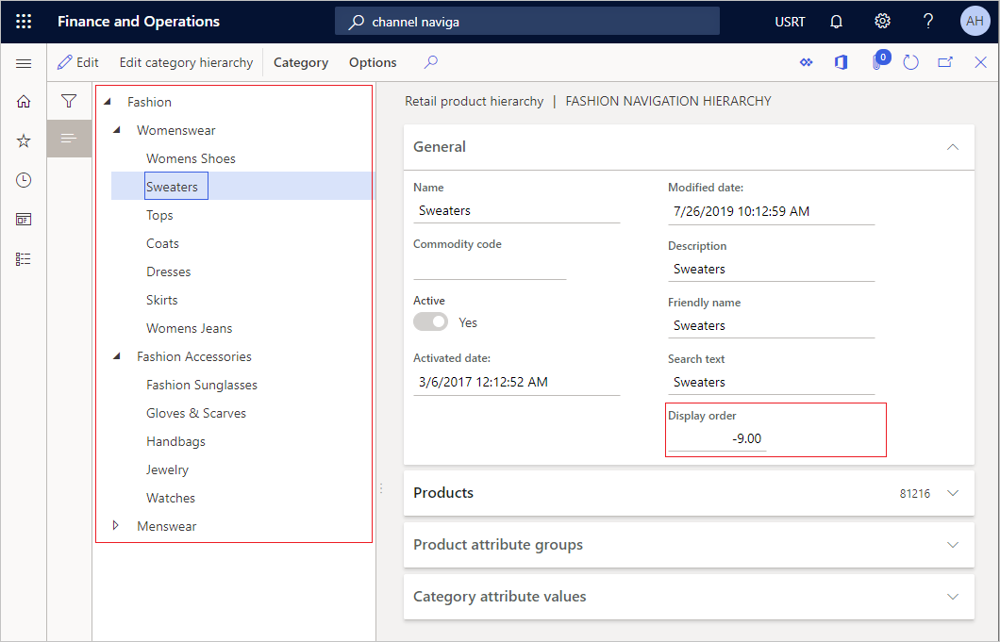

Ändern Sie die Sortierreihenfolge für Verkaufsentitäten
Important
Dynamics 365 Retail ist jetzt Dynamics 365 Commerce und bietet umfassende Handelsfunktionen für alle Kanäle – von E-Commerce über Shops bis hin zu Callcentern. Weitere Informationen zu diesen Änderungen finden Sie unter Microsoft Dynamics 365 Commerce.
Einzelhändler erachten die Produkterfassung als ein primäres Tool für Debitoreninteraktionen über alle Kanäle hinweg. Verschiedene Funktionen können Debitoren helfen, Produkte einfacher zu ermitteln. So können sie Kategorien, Suchen und Filter durchsuchen.
In diesem Thema werden die Konzepte erläutert, die zum Steuern der Anzeigereihenfolge für verschiedene verkaufsbezogene Entitäten zugeordnet werden. Es wird auch erklärt, wie Sie die Sortierreihenfolge ändern.
Übersicht
Die Unterstützung zur Sortierung von verschiedenen verkaufsbezogenen Entitäten wurde verbessert. Diese Unterstützung ist nun besser auf Szenarien mit Bestandskunden ausgerichtet, die zuvor Erweiterungen von Implementierungspartnern erforderlich machten.
In Retail-Versionen vor Version 10.0.5 war die Sortierreihenfolge für Kategorien in der Navigationshierarchie alphabetisch. Mit den neuen benutzerdefinierten Sortierreihenfolgenfunktionen können Verkaufsmanager die Sortierreihenfolge für verschiedene verkaufsbezogene Entitäten für alle Endbenutzerkunden konfigurieren. Diese Kunden umfassen Headquarters (HQ) und Callcenter.
Konfigurieren der Anzeigereihenfolge für Kategorien in der Produkthierarchie
Bevor Sie dieses Verfahren ausführen können, müssen Demodaten in Ihrer Umgebung installiert werden.
- Gehen Sie zu Retail and Commerce > Produkte und Kategorien > Commerce-Produkthierarchie.
- Klicken Sie auf Kategoriehierarchie bearbeiten.
- Klicken Sie auf Bearbeiten.
- Erweitern Sie in der Struktur ALLE > Aktivität Sport.
- Erweitern Sie in der Struktur ALLE > Team-Sport.
- Geben Sie im Feld Anzeigereihenfolge eine Zahl ein. (Die Zahl kann negativ sein.)
- Wiederholen Sie die Schritte 4 bis 6 für zusätzliche Kategorien, für die Sie die Reihenfolge ändern möchten.
Der Anzeigereihenfolge für die Kanalnavigationshierarchie wird in HQ für die Produkthierarchie und freigegebene Produkte nach Kategorie angezeigt.

Konfigurieren der Anzeigereihenfolge für Kategorien in der Kanalnavigationshierarchie
Bevor Sie dieses Verfahren ausführen können, müssen Demodaten in Ihrer Umgebung installiert werden.
Gehen Sie zu Retail and Commerce > Produkte und Kategorien > Kanalnavigationskategorien.
Wählen Sie in der Liste die Modenavigation-Hierarchie aus.
Klicken Sie auf Kategoriehierarchie bearbeiten.
Klicken Sie auf Bearbeiten.
In der Struktur wählen Sie Mode > Damenmode > Damenschuhe aus.
Geben Sie im Feld Anzeigereihenfolge eine Zahl ein.
In der Struktur wählen Sie Mode > Damenmode > Oberteile aus.
Ebenso können Sie die Sortierreihenfolge für die Unterkategorien definieren.
In der Struktur wählen Sie Mode > Herrenmode > Freizeithemden aus.
Geben Sie im Feld Anzeigereihenfolge eine Zahl ein.
In der Struktur wählen Sie Mode > Herrenmode > Mäntel & Jacken aus.
Geben Sie im Feld Anzeigereihenfolge eine Zahl ein.
Wiederholen Sie dies für alle weiteren Kategorien, für die Sie die Reihenfolge ändern möchten.
Der Anzeigereihenfolge für die Kanalnavigationshierarchie wird in HQ, im Katalog und in Kanälen angezeigt.

Note
Standardmäßig ist die Funktion für die benutzerdefinierte Sortierreihenfolge deaktiviert. Um zu erfahren, wie Sie diese Funktion und andere Funktionen aktivieren können, siehe Funktionsverwaltung.